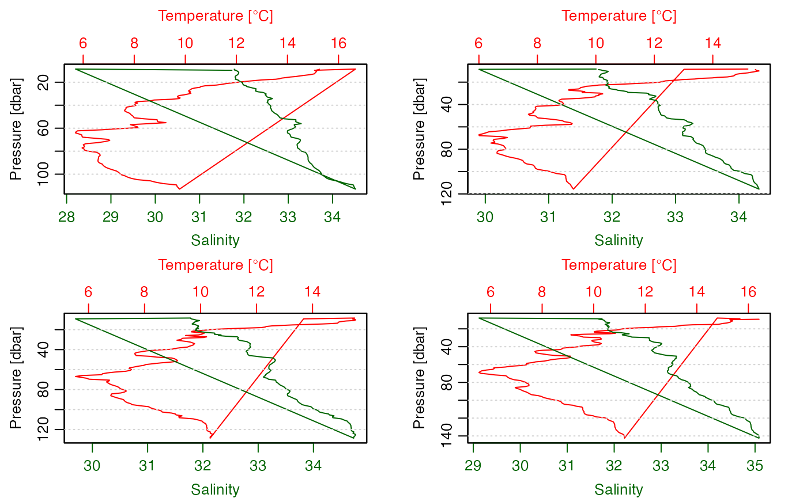
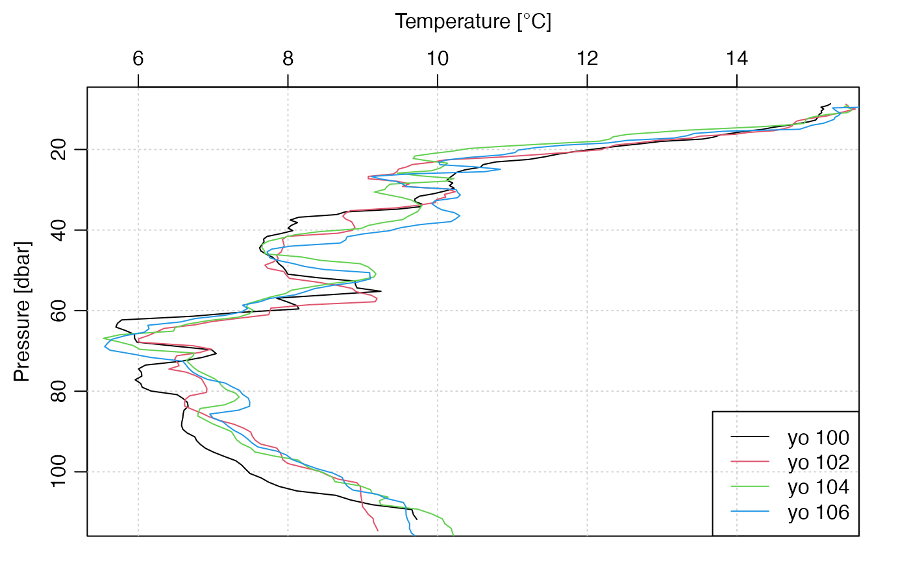

Introduction to oceGlider
Dan Kelley (https://orcid.org/0000-0001-7808-5911)
2023-07-17
oceanglider.RmdAbstract. This vignette explains the basics of using the oceGlider package. It is a work in progress, because the functions provided by this package are under active development.
Introduction
This package is intended to make it easier for analysts to work with data acquired by ocean gliders. There is a wide variety of glider types and of file formats, and the purpose of this vignette is to acquaint the reader with a particular type (the seaexplorer from Alseamar) and particular approach (using data files produced by the glider itself).
Rather than simply state what might be best practices, I will present a sort of illustrated diary, showing how I worked my way through a small sample dataset that is provided with the package.
Data Sources and file organization
The first step in working with glider data is often to download them from a server. The lack of URL conventions for such servers can make this a somewhat challenging task to discuss in general terms, and the same can be said about the variety of file layouts and file names, both across glider types and even within glider types.
Once data are downloaded, there is an additional task of deciding how to organize the data locally. At the time of writing, the developers of this package are leaning towards a scheme with directories named like
/data/glider/2019/seaexplorer/sea021/m49/raw
/data/glider/2019/seaexplorer/sea021/m49/subfor seaexplorer data. Here, sea021 refers to seaexplorer
glider number owned by a particular institute, and m49
refers to the mission number. The first of these directories holds “raw”
data, i.e. the full datasets as downloaded a glider after recovery, and
the second holds “sub” data, i.e. subsets provided by the glider during
its transmissions while underway on a mission.
Examples of some of these data files are stored within this R
package, and are available using the system.file function,
as shown throughout this vignette. This should make it easier for
readers to learn how to use this package.
SeaExplorer Gliders
This package comes with some sample data files that can be used for practice and illustration. For example,
library(oceGlider)
#> Loading required package: oce
#> Loading required package: gsw
directory <- system.file("extdata/seaexplorer/sub", package="oceGlider")finds the names of a few selected "sub" files (these are
files transmitted by the glider when it is underway; think of the “sub”
as an abbreviation for subset). Reading these files is done with the read.glider.seaexplorer.realtime
function, e.g.
g <- read.glider.seaexplorer.realtime(directory)(when called interactively, this function will print a progress-bar, unless instructed otherwise by setting the argument to .)
The package also comes with a few "raw" files, which are
larger datasets downloaded from the glider after recovery. In the
oceanographic convention, these are called delayed-mode data, so the
function to read them is called read.glider.seaexplorer.delayed
directory2 <- system.file("extdata/seaexplorer/raw", package="oceGlider")
g2 <- read.glider.seaexplorer.delayed(directory2, level=1)
message(class(g2))
#> gliderHere is how to plot a time-series of pressure from this dataset:
plotGlider(g2, which="p")Here is how to see locations in space:
plotGlider(g2, which="map")The points are on a line because read.glider.seaexplorer.delayed
interpolates longitude and latitude between surfacings, and this small
subset of glider data was selected to have a position record at the
first and last of the sequence.
It is also noteworthy that some of the spots seem to have only a few data. This can be checked with
table(g2[["yoNumber"]])
#>
#> 100 101 102 103 104 105 106
#> 163 1 173 1 178 1 261the result of which show that some yoNumber values
contain too few data to be considered profiles. There are several ways
to explore this further, but for the present purpose, let’s make a new
object that contains only those yos that have more than, say, 5
points:
g3 <- subset(g2, yolength >= 5)As a check on that idea, note that
unique(g3[["yoNumber"]])
#> [1] 100 102 104 106verifies that we got the desired yos.
Quite often, it will be desirable to work with individual yos. With only 3, as in this small test case, we might as well plot them (say as temperature profiles). For that, it is helpful to split by yo number, and then cycle though the subsets, converting to CTD objects and plotting with functions from the package.
The individual yos can be examined by splitting the
payload portion:
payload <- g3[["payload"]] # or [["payload1"]]
s <- split(payload, payload$yoNumber)
par(mfrow=c(2, 3)) # we happen to know there are 3 significant yos
for (ss in s) {
ctd <- oce::as.ctd(salinity=ss[["salinity"]],
temperature=ss[["temperature"]],
pressure=ss[["pressure"]],
longitude=ss[["longitude"]],
latitude=ss[["latitude"]])
oce::plotProfile(ctd, xtype="salinity+temperature", eos="unesco")
}
(Here, the UNESCO equation of state is used, because the newer
TEOS10/GSW version requires longitude and latitude information to be
valid, which is not the case in the present version of the package at
the end of a dataset, owing to how read.glider.seaexplorer.delayed
is works.)
Note how there is a line connecting near-surface and deep data. To
learn more about that, let’s use an function to create a
`scan'' plot, say with the last of thesectd` objects just
created.
plotScan(ctd, type="p")
This makes it clear that the yo contains near-surface data, then skips to depth, and then returns to the surface. A more careful examination with
par(mfrow=c(1, 2))
plot(s[[1]][["time"]], s[[1]][["pressure"]], xlab="Time", ylab="Pressure")
plot(s[[1]][["time"]], s[[1]][["navState"]], xlab="Time", ylab="navState")reveals that if the desire was to obtain a simple upcast, we might
consider subsetting by the value of the navState
variable.
Noting that the navState values are as follows: * 105
means the glider is not navigating yet; * 115 means the glider is
surfacing in preparation for communication; * 116 means the glider is at
the surface, acquiring a GPS signal, and is communicating; * 110 means
the glider is inflecting downward; * 100 means the glider has ballast
set to be descending; * 118 means the glider has ballast adjusted to
reduce density, so will be inflecting upward; * 117 means the glider has
ballast set to be ascending. it may be sensible to select for 117, if
the desire is to focus on the ascent portion of the yo. So, retracing
our steps, we have
g4 <- subset(g3, navState==117)
payload <- g4[["payload"]] # or [["payload1"]]
s <- split(payload, payload$yoNumber)
par(mfrow=c(2, 2)) # we happen to know there are 3 significant yos
for (ss in s) {
ctd <- oce::as.ctd(salinity=ss[["salinity"]],
temperature=ss[["temperature"]],
pressure=ss[["pressure"]],
longitude=ss[["longitude"]],
latitude=ss[["latitude"]])
oce::plotProfile(ctd, xtype="salinity+temperature", eos="unesco")
}
These results are not much better! Selecting by navState
is clearly not sufficient. However, oce provides the
ctdTrim() function for isolating the ascent (called
"upcast" in the CTD context), e.g.
par(mfrow=c(2, 2)) # we happen to know there are 3 significant yos
for (ss in s) {
ctd <- oce::as.ctd(salinity=ss[["salinity"]],
temperature=ss[["temperature"]],
pressure=ss[["pressure"]],
longitude=ss[["longitude"]],
latitude=ss[["latitude"]])
ctd <- oce::ctdTrim(ctd, "upcast")
oce::plotProfile(ctd, xtype="salinity+temperature", eos="unesco")
}
This looks reasonable now. Let’s try a waterfall temperature plot, with black for the first yo, red for the second, green for the third, and blue for the fourth, as explained in the legend.
par(mfrow=c(1, 1))
for (i in seq_along(s)) {
ss <- s[[i]]
ctd <- oce::as.ctd(salinity=ss[["salinity"]],
temperature=ss[["temperature"]],
pressure=ss[["pressure"]],
longitude=ss[["longitude"]],
latitude=ss[["latitude"]])
ctd <- oce::ctdTrim(ctd, "upcast")
if (i == 1) {
oce::plotProfile(ctd, xtype="temperature", eos="unesco")
} else {
lines(ctd[["temperature"]], ctd[["pressure"]], col=i)
}
}
legend("bottomright", lwd=1, col=seq_along(s),
legend=paste("yo",
as.character(lapply(s,function(ss) ss$yoNumber[1]))))
At this stage, readers will likely have some ideas for doing more with this sample dataset, and ought to be aware that many of the steps here might not be appropriate for other datasets, e.g. those in which data were acquired on both ascent and descent, or only on descent.
References
Integrated Ocean Observing System (U.S.). “Manual for Quality Control of Temperature and Salinity Data Observations from Gliders. Version 1.0.” Report. U.S. Department of Commerce, National Oceanic and Atmospheric Administration, National Ocean Service, Integrated Ocean Observing System, U.S. Integrated Ocean Observing System, Glider Data Assembly Center, 2016. https://www.oceanbestpractices.net/handle/11329/289.
Integrated Ocean Observing System (U.S.). “NGDAC NetCDF File Format Version 2,” March 27, 2019. https://github.com/ioos/ioosngdac/wiki/NGDAC-NetCDF-File-Format-Version-2.